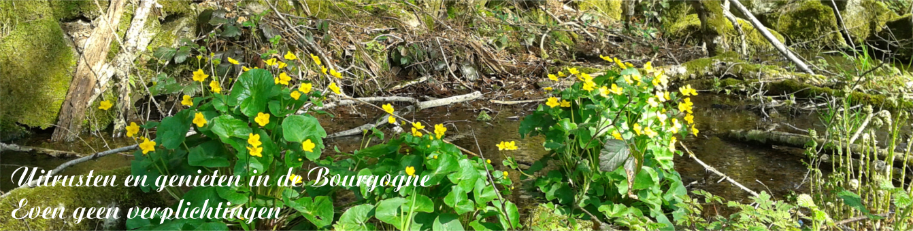
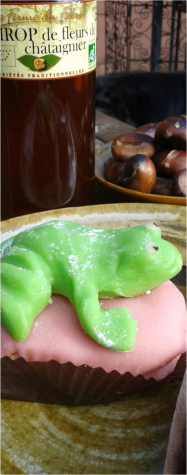
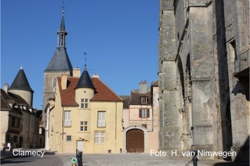
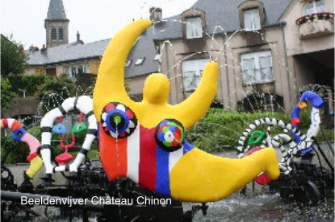
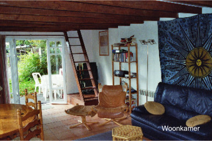
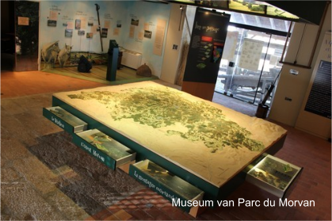
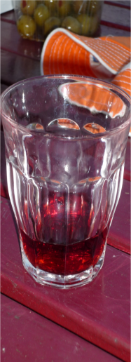

Links en verhaaltje van gasten
Een indruk van het dorpsleven in Dun-les-Places, vertoond op tv France3: https://www.youtube.com/watch?v=9yo3m48jbdI
Filmpje van de dieren om het huisje (boommarter, dassenfamilie, ree, specht) opgenomen door een van onze gasten:
https://youtu.be/8Sjp4uZTMyQ
Een onuitputtelijke bron voor wandelingen: www.visorando.fr. Een voorbeeld van een mooie wandeling in de buurt is: www.visorando.com/randonnee-saint-agnan-nievre.html
Nog veel meer wandelingen van de wandelsite KOMOOT kun je downloaden op: https://www.komoot.com/nl-nl/guide/1306759/wandelen-rond-dun-les-places
Op Alltrails staan speciale wandelingen met de hond in de Morvan: https://www.alltrails.com/nl-nl/parken/france/saone-et-loire/parc-naturel-regional-du-morvan/dogs
http://www.dun-les-places.fr
http://www.maisondutourisme-parcdumorvan.com
http://www.france-voyage.com/frankrijk-gemeentes/vezelay-35588.htm
http://nl.wikipedia.org/wiki/V%C3%A9zelay
http://nl.wikipedia.org/wiki/Autun
http://www.france-voyage.com/frankrijk-gemeentes/saulieu-4863.htm
http://tourisme.parcdumorvan.org
Een verhaaltje van onze gasten Aad en Lida
Toen we vakantieplannen gingen maken, kwam de advertentie in de Hovawartaal bovendrijven. Frankrijk lokte ons wel, want we waren er een paar keer doorheen gereden, wanneer we naar Spanje gingen. We waren er wel een keer met vakantie geweest, maar dat was in Les Landes. Een heel andere kant van Frankrijk en een stukje verder rijden. Maar dat was wel goed bevallen. De Morvan op 700 kilometer van Nederland met een gastenhuis met een omheinde tuin, waar onze bijna driejarige Hovawart Bjørn lekker los kon lopen leek ons wel aardig. Ook zou onze kanarie Fifi buiten onder een boom kunnen hangen. De foto's zagen er leuk uit. Dus maar even op de website gekeken en een besluit genomen. Gelukkig was het nog vrij.
Op zaterdag de 9e mei gingen we richting Dun-les-Places. Onderweg staan de gele koolzaadvelden prachtig in bloei. Precies om 16.00 uur kwamen we aan. We werden hartelijk begroet door Luda en Leo die het gras aan het maaien waren. Ze boden gelijk aan om de spullen naar het huisje te brengen. Er stonden mooie seringen op tafel uit eigen tuin met een fles rode wijn met twee glazen. De zon scheen volop en het is een knus huisje met alles erop en eraan. Een kast met boeken, spelletjes, een cd speler, cd's , een tv waar je een dvd op kan kijken. Een ordner met heel veel informatie wat je allemaal kan bezichtigen, waar je een dokter kunt vinden, boodschappen kan gaan halen enz. Ook zijn er veel folders en tijdschriften over de Morvan, wandelkaarten, stadsplattegronden. Te veel om op te noemen. Hier kunnen we ons in ieder geval wel vermaken. De trap naar boven is een heel speciale, maar wel goed te doen. De avonden zijn wat fris, maar dan kun je de houtkachel aanmaken. Lucifers, aanmaakblokjes en -houtjes zijn er allemaal. En buiten een hok vol met houtblokken. Ook aan keukenspullen geen gebrek. Een oventje, magnetron, mixer, staafmixer, enz. Schoonmaakmiddelen, kruiden, zout, koffie, thee, keukenrol, toiletpapier staat er allemaal. De badkamer is fijn, en wat een tuin! Groot met veel gras, struiken, bomen en bloemen. Een prachtige roze hortensia met wel 20 bloemen staat op het terras. Onze elektrische fietsen mogen beschut staan bij het grote woonhuis. En wat een mooi uitzicht heb je vanaf het terras of uit het kamerraam. Bijna iedere ochtend kun je buiten ontbijten en genieten van het uitzicht. En wat een rust. Alleen wat werkverkeer komt er langs, zoals een tractor of een vrachtwagen met hout. 's Avonds is het er pikdonker en zie een prachtige sterrenhemel.
We hebben ons niet verveeld. Zijn een paar keer naar Saulieu geweest, waar Bjørn in het meertje wat je onderweg ziet liggen lekker heeft kunnen zwemmen. Lac des Settons is een mooi groot meer waar veel toerisme, campings, restaurants en vissers zijn. Vézelay is bekend als bedevaartsoord en om zijn abdijkerk en ligt aan de Cure en is gebouwd tegen een hoge heuvel (300 meter). De abdijkerk is een verzamelplaats om de lange tocht naar Santiago de Compostela aan te vangen. De pelgrims kunnen daar ook overnachten. Een leuke plaats en zeker een bezoekje waard. In Avallon zijn we naar de markt geweest en hebben we een beetje rondgewandeld. De stad ligt in het hart van Bourgondië op een granieten rots op een hoogte tussen 163 en 369 meter. De vestingmuur omringt nog steeds delen van de oude binnenstad, waar de Sint-Lazaruskerk, de klokkentoren en oude vakwerkhuizen zich in goede staat bevinden.
We zijn veel wezen fietsen, le Vieux-Dun is een aanrader, maar doe het wel op een elektrische fiets of een racefiets. Anders is het geen doen. De wegen zijn in goede conditie. Er zijn geen fietspaden, maar dat is ook niet nodig. Af en toe komt er een auto langs, maar meestal ben je de enige weggebruiker. Op het uitkijkpunt Rocher-de-la-Perouse heb je op 556 meter een prachtig panoramisch uitzicht. Vooral als je de laatste 100 meter te voet aflegt.
Quarré-les-Tombes kun je ook op de fiets naar toe. Haal daar een lekker warme wafel bij de bakker. Je moet er wel even voor in de rij staan, maar hij is lekker. Ook de chocolade vond het thuisfront heerlijk en leuk om te geven. Lac de Chaumeçon is een kunstmatig stuwmeer dat er voor zorgt dat Parijs geen last meer heeft van overstromingen van de Seine. Dit meer wordt gevoed door de rivier Le Chalaux. Je kunt er vissen, wandelen, zwemmen en kanoën. Dit meer stopt opeens bij een stuw. Aan de ene kant van de weg allemaal water en aan de andere kant een diep dal met bomen en een klein watertje. Echt een raar gezicht en je moet geen hoogtevrees hebben.
Autun hebben we ook niet overgeslagen. Het is een prachtige stad aan de rand van de Morvan. Er zijn veel Romeinse gebouwen, die je ook nu nog kan bezichtigen of het restant daarvan. Op zaterdag is daar een grote markt.
En dan wordt het 23 mei en komt er een einde aan de vakantie. Waar we genoten hebben van de rust, het mooie weer, de lekkere verse eitjes van Luda's kippen, die ons aan vroeger herinnerden. Het kraaien van de haan, het kwaken van de kikkers, de roep van de koekoek, de merel , Bjørn die door het hoge gras aan het hollen was, de leuke fietstochten en het gezang van onze Fifi. Maar vooral van het huisje, de rust, het uitzicht en de prachtige groene omgeving. We kunnen het iedereen aanraden, je komt er tot rust en kunt er heel veel boeken lezen.
Foto: Bjørn van de Haskerazathe die op de vestingsmuur bij de abdijkerk in Vézelay zit en geniet van het mooie uitzicht over de Morvan.





